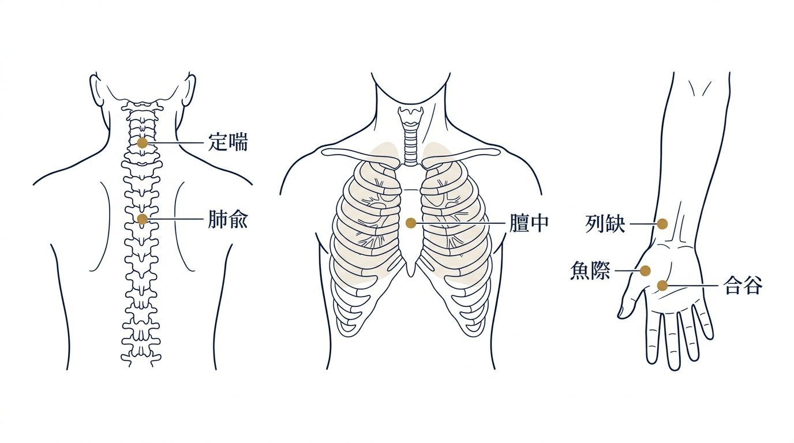

肺化膿症の鍼灸
肺の組織が細菌感染で破壊され空洞に膿がたまる感染症です。医療機関での抗生物質治療を最優先とし、回復後の体調管理を支えます。


院長YouTube解説・関連動画
肺化膿症の改善例
肺化膿症の改善は、症状の重症度や原因に基づいて個別に設計されます。例として、山田太郎さん（仮名、55歳、喫煙歴あり）の場合を考えてみましょう。
山田太郎さんは持続的な咳嗽、痰の増加、息切れなどの症状を訴えて病院に行きました。医師は詳しい病歴を取り、胸部X線、気管支鏡検査、痰の培養などを実施し、肺化膿症の判断を下しました。
山田太郎さんが喫煙していることが判明したため、まずは喫煙の中止を促しました。医師は喫煙のリスクを説明し、禁煙プログラムやニコチン置換法などの支援を提供しました。
山田太郎さんの痰の培養結果から、特定の細菌感染が確認されたため、抗生物質（例：マクロライド系）が処方されました。改善の期間や使用方法についての指示が与えられました。
山田太郎さんは気道清浄化のための方法を学びました。気道振動装置やハフィントンテクニック（ハフィントンバルブを用いた気道の自主清浄法）などの気道クリアランス技術が指示され、適切な使い方を教えられました。
山田太郎さんは呼吸リハビリテーションのプログラムに参加しました。呼吸筋トレーニングや適切な姿勢の維持、気道清浄化の技術などが指導され、痰の排出と呼吸の改善を図りました。
山田太郎さんは肺炎球菌やインフルエンザなどの予防接種を受けるように勧められました。これにより、感染症のリスクを減らし、合併症の予防に貢献することが期待されました。
山田太郎さんは定期的に医師のフォローアップを受けました。肺機能テストや胸部X線などの検査が実施され、改善の効果や症状の変化がモニタリングされました。また、計画の調整や必要な場合の専門家の紹介も行われました。
改善の効果は個人によって異なります。
▼ 詳しく知りたい項目だけタップして開けます（全項目の医学解説を収録）
01. 原因とメカニズム
なぜ症状が起きるのか・鍼灸の作用機序を読む
▼
01. 原因とメカニズム
なぜ症状が起きるのか・鍼灸の作用機序を読む
誤嚥などによって口腔内の細菌が肺に入り込んだり、他部位の感染症から血流を介して細菌が運ばれたりすることで、肺の組織が炎症・破壊され空洞内に膿がたまる病気です。高齢者や嚥下機能が低下した方、喫煙歴のある方、免疫機能が低下している方に起こりやすく、はっきりした症状が出ないまま進行することもあります。放置すると重篤な呼吸障害や合併症につながるため、呼吸器内科等での抗生物質治療や排膿処置が必須です。
なぜ鍼灸で改善へ向かうのか？（作用機序の図解）
肺化膿症に対する鍼灸は、心拍変動・血管トーンを整える自律神経サポート機序を通じて、お体本来の回復力を引き出します。
循環器専門医の標準治療を絶対前提とし、手首や背部の安全な経穴へ低刺激でアプローチします。
心臓への過剰な交感神経刺激を穏やかに鎮め、心拍リズムと血管緊張の急変を抑えます。
ストレスで固まりやすい胸郭や横隔膜の緊張を解き、酸素摂取とリラックス反応を促します。
内服管理を厳守しながら、疲労やストレスが引き金となる症状不安の軽減を支えます。
02. よくあるお悩み
このような症状はありませんか？（4項目）
▼
02. よくあるお悩み
このような症状はありませんか？（4項目）
- ✓発熱や長引く咳、黄緑色や悪臭を伴う痰が続いている
- ✓息苦しさや胸の痛み、痰に血が混じることがある
- ✓食欲不振や体重減少、強い倦怠感が気になっている
- ✓感染治療終了後の体力低下や胸背部のこわばりを整えたい
03. 当院の施術アプローチ
施術の進め方・改善のポイントを見る
▼
03. 当院の施術アプローチ
施術の進め方・改善のポイントを見る
04. ツボ詳細・セルフケア一覧
呼吸器・喘息・COPD・息苦しさ緩和の全身ツボ図解（6穴）
▼
04. ツボ詳細・セルフケア一覧
呼吸器・喘息・COPD・息苦しさ緩和の全身ツボ図解（6穴）
実際の施術ではお一人おひとりの体質・症状に合わせて選穴しますが、気管支喘息・COPD・慢性咳嗽・呼吸困難の標準治療併用サポートの臨床でよく用いられる代表的なツボの目安です。
| ツボ名 | 位置の目安 | 主な狙い | セルフケアの注意点 |
|---|---|---|---|
| 定喘（ていぜん） | 首を前に倒して出る背骨のすぐ横 | 咳込み・喘鳴・呼吸補助筋の緊張緩和 | 背部・胸部への深い刺鍼は避け安全な角度・深さで行います。 |
| 肺兪（はいゆ） | 肩甲骨の間、第3胸椎のすぐ外側 | 気道周囲の自律神経バランス・背部のこわばり緩和 | カイロや温灸で背中を温めるケアも有効です。 |
| 膻中（だんちゅう） | 左右の乳頭を結ぶ線の中央（胸骨上） | 胸郭の圧迫感・息苦しさに伴う不安の鎮静 | 手のひらで優しくさすりながらゆっくり息を吐きます。 |
| 列缺（れっけつ） | 手首の親指側、シワから指2本分肘寄り | 呼吸器系（肺経）の最重要遠隔穴 | 吸入薬などの標準治療を必ず継続したうえで併用します。 |
| 魚際（ぎょさい） | 親指の付け根のふくらみの縁 | 息苦しさ・咳・のどの熱感の緩和（肺がん呼吸困難研究でも使用） | 手首・親指周りを優しく揉みほぐします。 |
| 合谷（ごうこく） | 手の甲、親指と人差し指の間 | 呼吸困難に伴う不安と全身緊張の軽減 | 急激な息苦しさや発作時は直ちに医療機関を受診してください。 |
05. 医学的根拠・国際査読論文（PubMed / Cochrane）
科学的エビデンス・出典リンク一覧（4件）
▼
05. 医学的根拠・国際査読論文（PubMed / Cochrane）
科学的エビデンス・出典リンク一覧（4件）
国際的な医学データベース（PubMed・Cochrane等）で報告されている気管支喘息・COPD・慢性咳嗽・呼吸困難の標準治療併用サポート領域の代表的な査読済み鍼灸研究をまとめています（標準治療との併用や研究上の限界を含めて正確に掲載）。
| 年・研究デザイン | 対象・規模 | 主な結果 | 限界・出典 |
|---|---|---|---|
| 2019年 大規模多施設RCT | 慢性安定狭心症 398名解析（標準薬物療法併用） | 16週時点の4週間発作減少は実鍼群がシャム群比5.18回・待機群比5.63回多く有意改善（P<0.001）。 | 標準薬物療法への併用（補完）試験であり単独療法ではない。 JAMA Intern Med (PMID: 31355870) |
| 2007年 シャム対照RCT | 本態性高血圧 140名完了（ドイツ・24時間ABPM） | 治療終了時の24時間血圧はシャム比SBP -6.4mmHg・DBP -3.7mmHg有意低下（P<0.001）。 | 終了3〜6か月で治療前水準へ戻るため継続ケアが必要。 Circulation (PMID: 17548730) |
| 2015年 メタ解析 | 高血圧 23 RCTs（n=1,788） | 降圧薬＋実鍼は降圧薬＋シャム比でSBP -7.47mmHg・DBP -4.22mmHg有意低下。鍼単独は降圧薬と同等・根拠不十分。 | 盲検化・異質性に課題。降圧薬の自己中断は厳禁。 PLoS One (PMID: 26207806) |
| 2025年 メタ解析 | 心拍変動（HRV）10 RCTs（n=744） | 自律神経全体の適応指標SDNNを有意に改善、重篤な有害事象なし。 | LF・HFには不確実性が高くさらなる検証が必要。 Front Neurosci (PMID: 41230507) |
参考文献・出典
- 2019年 大規模多施設RCT（慢性安定狭心症 398名解析（標準薬物療法併用））— JAMA Intern Med (PMID: 31355870)
- 2007年 シャム対照RCT（本態性高血圧 140名完了（ドイツ・24時間ABPM））— Circulation (PMID: 17548730)
- 2015年 メタ解析（高血圧 23 RCTs（n=1,788））— PLoS One (PMID: 26207806)
- 2025年 メタ解析（心拍変動（HRV）10 RCTs（n=744））— Front Neurosci (PMID: 41230507)
06. よくある質問（FAQ）
よくあるご質問を見る（2件）
▼
06. よくある質問（FAQ）
よくあるご質問を見る（2件）
Q. 咳や痰、微熱が続いていますが鍼灸で様子を見てもよいですか？
いいえ、肺化膿症は細菌感染により肺組織が破壊される病気であり、抗生物質による治療が不可欠です。血痰や胸痛、発熱、膿のような痰がある場合は速やかに呼吸器内科を受診してください。
Q. 治療が終わった後、呼吸の浅さや背中の張りをケアできますか？
感染が完全に治癒し、主治医から施術の許可が得られた段階であれば、肺への安全に配慮しつつ背中や肩周りのこわばりを和らげ、回復期の体調管理をサポートできます。
あわせて読まれる関連疾患（循環器のお悩み）
血液中の細菌が心臓の弁や心内膜に病巣をつくる重篤な感染症です。専門医での抗菌薬治療を最優先し、回復後の体調管理を支えます。
首の骨の中を通る椎骨動脈の内膜が裂ける重篤な血管疾患です。突然の頭痛は即救急受診が必須で、首への施術や操作は絶対禁忌です。
夜間や安静時に心室細動を起こし得る遺伝性不整脈疾患です。循環器専門医での厳重な管理を最優先に、安定期のストレス管理を支援します。
おへそが飛び出し腸管などが脱出する状態です。激しい痛みや戻らない膨らみは緊急受診が必須、安定期の腹圧対策等を補完支援します。
動脈血中の酸素が不足した状態です。医療機関での酸素投与と原因疾患の治療を最優先に、安定期の呼吸環境や疲労感をサポートします。
水分の過剰摂取で血液のナトリウム濃度が急低下する危険な状態です。急性期は救急対応が最優先で、安定期のストレス管理を支援します。
CLINICAL RECOVERY CASES
✨ 実際の臨床改善事例・回復経過を見る
銀座本院をはじめ各院での実際の改善事例を症状別に絞り込んでご確認いただけます。
おひとりで悩まず、まずはご相談ください
銀座本院・川口・大宮・横浜・博多・田無の各院でご予約を承っております。